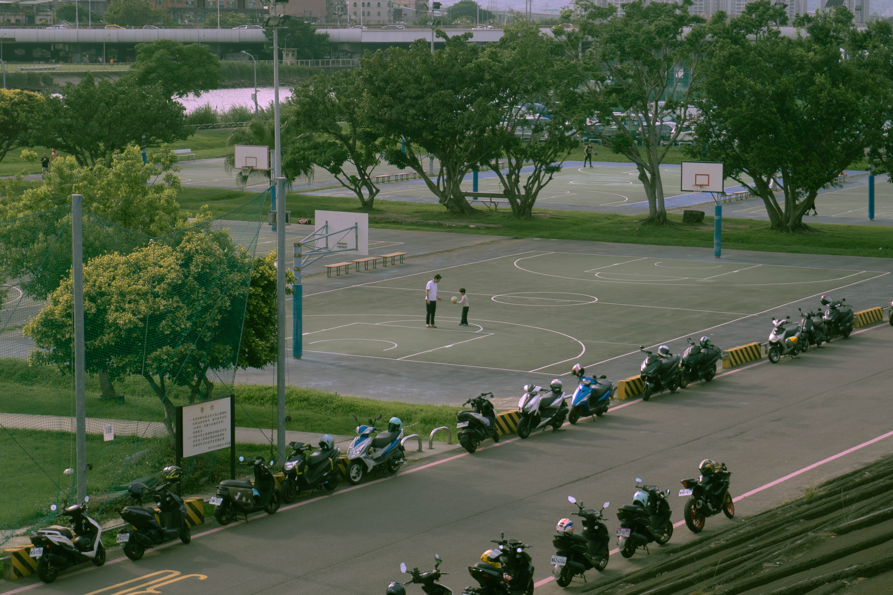
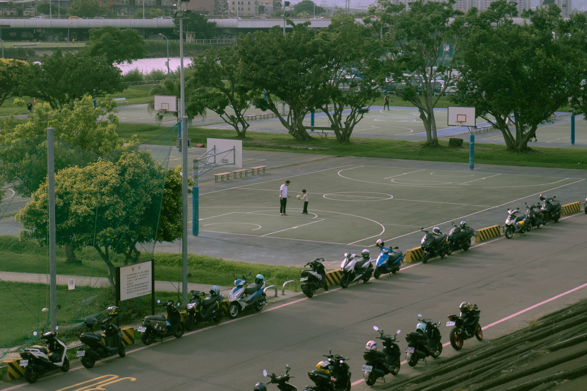

Hi, I’m Alex! I like to make things—whether it’s websites, film festivals, or magazines. My work revolves around creativity as a way to enact change, connect communities, and actualize a better world. I enjoy writing about films, bridging together creative communities, and thinking about ways to prioritize process over product.
Practices
A creative collective rooted in collaborative practices and processes. We look to cultivate interconnectedness within creative communities, build platforms that support marginalized folks, and imagine a better, alternative future through explorations of the creative process.
Every month or so, we host an intimate artist showcase of presentations, performances, and small group discussions. Five artists are invited, along with 25 guests, as we work towards building a more connected creative community.


A publication and community focused on covering films from Asia and the Asian diaspora. Our goal is to shift the cultural conversation of Asian cinema to recenter Asian voices in Western discourse, apply film critique through a radical lens, and broaden the definition of Asian film canon as defined by the general public. In addition to our magazine, we also host a biweekly Asian film society, and recently planned a film festival!
Our online magazine features longform writing on Asian films—a new essay every other week!
We collaborated with DePaul University to bring over 23 short films from Southeast Asia for 3 days of film, food, and programming.

A bi-weekly Asian film society where we watch an Asian film, and follow it up with a discussion.
Life in collaboration.
We collaborated with musician and visual artist Kilo Kish to bring to life her interactive video project, Fulfillment, and partnered again to update her site for the launch of Mothe.

We designed and developed the new home page for Chicago-based hip-hop collective, Pivot Gang. Then, we helped launch their web store for their debut album, You Can't Sit With Us.
A team of writers, designers, and photographers came together to create a collection of stories, photo sets, and art from our past and present. Features interviews with A.CHAL, Saba, and Naturel.


We curated a one-day music festival at Subterranean featuring some of the our favorite local acts, including Rich Jones, Family Reunion, Jovan Landry, and more.
Asian CineVision is a New York-based nonprofit media arts organization devoted to the development, exhibition, promotion, and preservation of Asian and Asian American film and video.
A bi-weekly digital zine documenting and archiving art during quarantine, featuring written pieces, photography, videos, and more.
An annual film festival hosted in Malaysia celebrating short films from Southeast Asia.
Process
PNGs of Interest


ordinary images worth documenting
featuring some empty space for you to stretch and relax

 

Personal Practice 000: A Flower Is Not A Flower (Eternal)
Imagining beyond.
Personal Practice 001: Forms/Fragments
Notes on the art around us; a media journal of sorts.
Personal Practice 002: The Seasons (Late 2020)
Monthly meditations on different topics of interest.
Personal Practice 003: The Waves (Late 2021)
A collection of media on how motion becomes movement.
Personal Practice 004: Dream Cards (2022)
An examination of our hopes and dreams, and the threads that tie us.